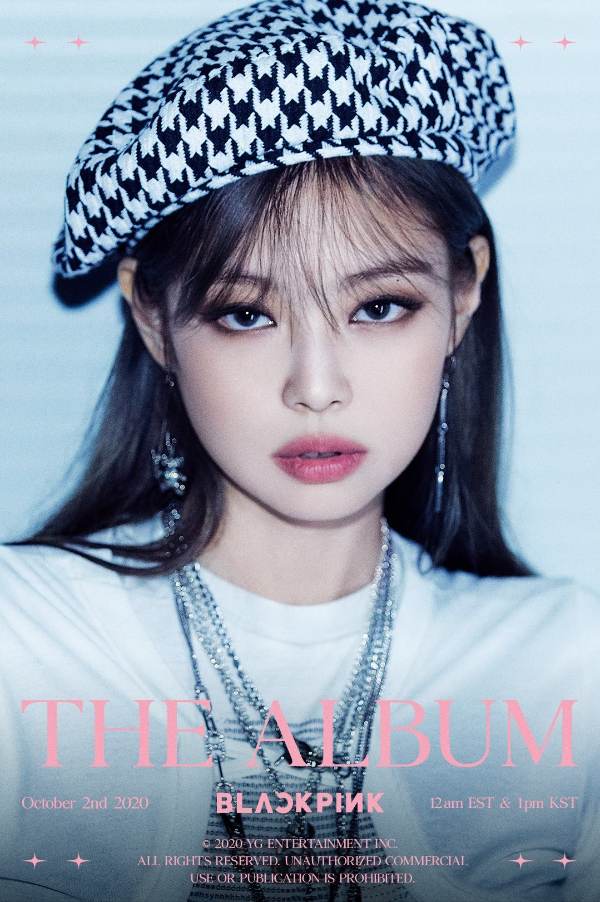
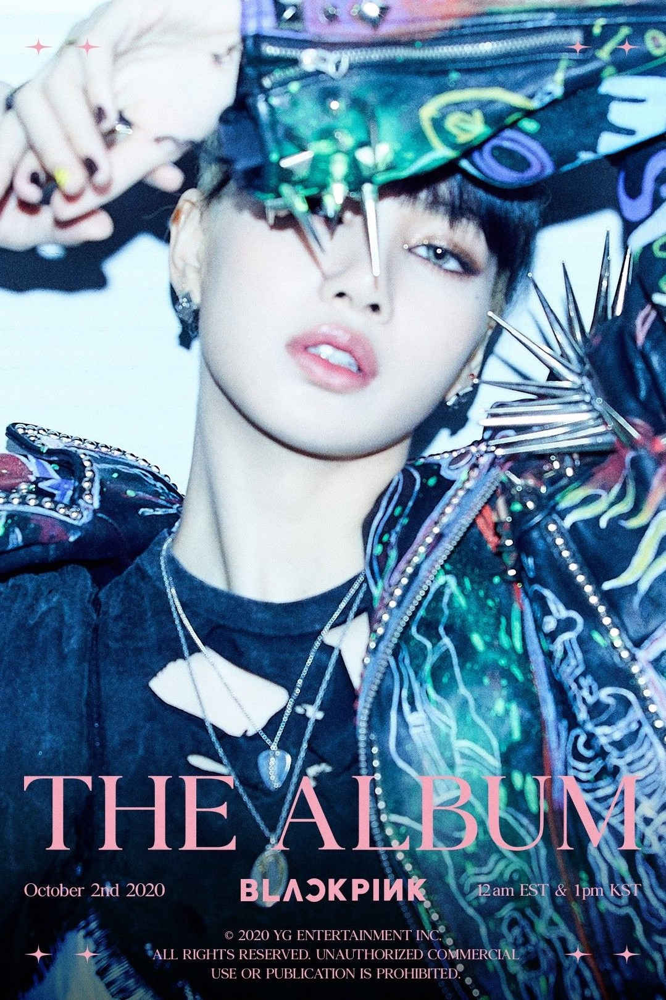
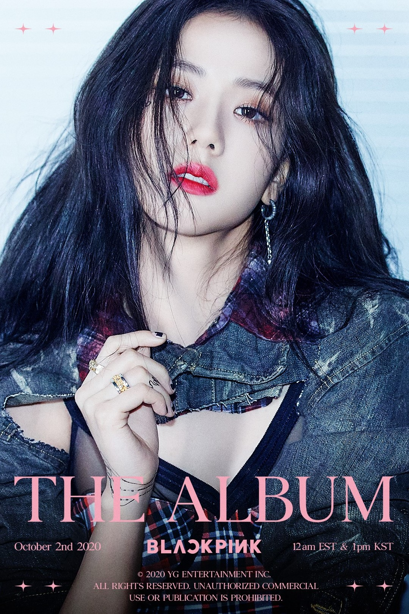

|  |
Jennie
She is a Korean singer and rapper. Born and raised in South Korea, Kim studied in New Zealand at the age of eight for five years, before returning to South Korea in 2010. She later debuted as a member of the girl group Blackpink under YG Entertainment in August 2016 and made her solo debut with the single "Solo" on November 12, 2018. |
|---|---|
|  |
Lisa
No, not at all. She is a Thai rapper, singer, and dancer based in South Korea. She is a member of the South Korean girl group Blackpink under YG Entertainment.Lisa is multilingual and speaks fluent Thai, English, Korean, along with basic Japanese and Chinese.In April 2019, Lisa became the most followed K-pop idol on Instagram, with 17.4 million followers at the time.[33] As of July 2020, Lisa has 35.4 million followers on the platform |
|  |
Jisoo
Jisoo, is a South Korean singer and actress. She made her debut in August 2016 as a member of the girl group Blackpink under YG Entertainment. 2011–2016: Career beginnings and debut with Blackpink. 2017–present: Solo endeavors and acting In addition to her native Korean, she also learned to speak Japanese and Chinese. |
 |
Rosé
She is a New Zealand singer and dancer based in South Korea.[2][3] Rosé signed with South Korean label YG Entertainment following an audition in 2012, training there for four years. She eventually made her debut as the main vocalist in the girl group Blackpink in August 2016. As a solo artist, she has featured in labelmate G-Dragon's 2012 track "Without You", which peaked at number ten on the Gaon Music Chart. |